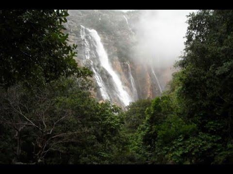
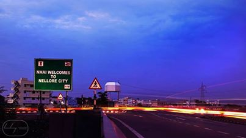

1 / 3

Caption Text
2 / 3

Caption Two
3 / 3

Caption Three
Nellore
Andhra Toursims
Take memories from Nellore and leave your foot prints here
|

Nellore has a diverse and vibrant history, with influences from various dynasties and empires that have ruled the region over the centuries. The city was initially under the control of the Mauryan Empire, followed by the Satavahanas, Pallavas, Cholas, and Vijayanagara Empire. Each dynasty left its mark on the region, contributing to its architectural and cultural heritage.The region around Nellore is blessed with natural beauty, with several beaches along its coastline. Nellore is well-connected to other parts of Andhra Pradesh and neighboring states through a robust transportation network. The city has a railway station and is also accessible by road. It is located approximately 175 kilometers north of Chennai, the capital city of Tamil nadu.Nellore is located in the southern state of Andhra Pradesh in India. It is situated on the banks of the Penna River and is the administrative headquarters of Sri Potti SriRamulu Nellore district.
 |
There are various theories linked to the origin of the name Nellore. One theory is that it comes from the Tamil word “Nelluru”, where “Nel” means paddy and “ooru” means place, indicating that the place is known for its rich harvest of paddy. Another theory is that it comes from the word "Nelli-ooru" which means "place of the Phyllanthus emblica tree" in Tamil.Nellore has a rich history and has been under the rule of various dynasties, including the Mauryas, Satavahanas, Cholas, Pallavas, Pandyas, Kharavela of Chedi dynasty, Kakatiyas, Eastern Gangas of Kalinga Empire, Vijayanagara Empire, Arcot Nawabs, and the British.Nellore is strategically located on NH5 connecting Chennai and Kolkata. The city is well-connected by road, rail, and air. The nearest airport is Tirupati Airport, which is around 130 km away from Nellore.Nellore is the sixth most populous city in Andhra Pradesh.